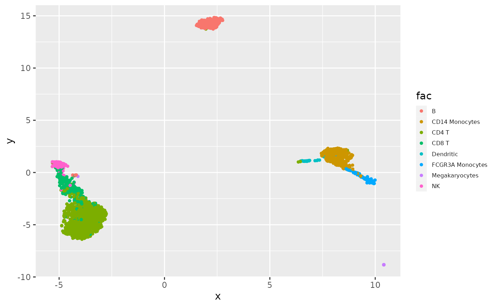
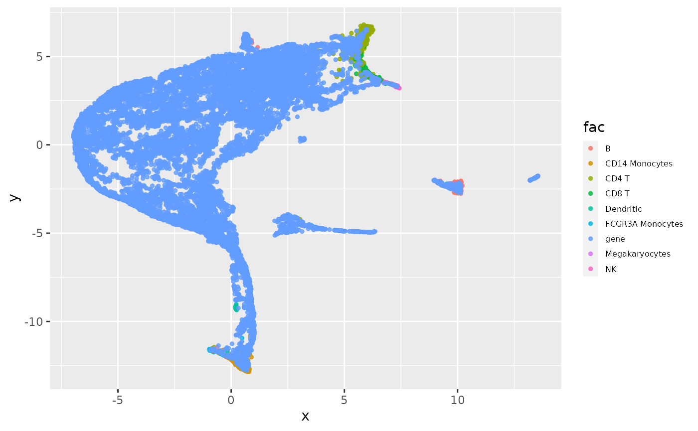

vignettes/BiocSIMBA.Rmd
BiocSIMBA.RmdSIMBA (paper link) (github) provides methods for “graph embeddings” of relationships between elements assayed in multimodal single cell experiments. The main software stack is written in Python. This package uses basilisk to simplify use of the SIMBA methods in R/Bioconductor.
Steps that can be taken with this software:
The TENx 3k PBMC data are included in the package.
The heart of the system is gen_graph_sce. This encapsulates calls from R to python and currently employs default settings for many tuning parameters. The simba_config function can be used to modify some parameters, but this needs more work as of 13.11.23.
library(BiocSIMBA)
h5adpath = system.file(file.path("h5ad", "tenx3k.h5ad"), package="BiocSIMBA")
gout = gen_graph_sce(h5adpath)## Saving results in: /home/vincent/TEMP/RtmpXoctuO/file326126f5c4253/simba_work
## relation0: source: C, destination: G
## #edges: 450343
## relation1: source: C, destination: G
## #edges: 1033680
## relation2: source: C, destination: G
## #edges: 440524
## relation3: source: C, destination: G
## #edges: 227588
## relation4: source: C, destination: G
## #edges: 134749
## Total number of edges: 2286884
## Writing graph file "pbg_graph.txt" to "/home/vincent/TEMP/RtmpXoctuO/file326126f5c4253/simba_work/pbg/graph0" ...
## Finished.
## Auto-estimating weight decay ...
## `.settings.pbg_params['wd']` has been updated to 0.015495
## Weight decay being used for training is 0.015495
## Converting input data ...
## [2023-11-13 08:07:58.769330] Using the 5 relation types given in the config
## [2023-11-13 08:07:58.769434] Searching for the entities in the edge files...
## [2023-11-13 08:08:00.601742] Entity type C:
## [2023-11-13 08:08:00.601927] - Found 2700 entities
## [2023-11-13 08:08:00.601973] - Removing the ones with fewer than 1 occurrences...
## [2023-11-13 08:08:00.602268] - Left with 2700 entities
## [2023-11-13 08:08:00.602319] - Shuffling them...
## [2023-11-13 08:08:00.603132] Entity type G:
## [2023-11-13 08:08:00.603183] - Found 16634 entities
## [2023-11-13 08:08:00.603223] - Removing the ones with fewer than 1 occurrences...
## [2023-11-13 08:08:00.604510] - Left with 16634 entities
## [2023-11-13 08:08:00.604562] - Shuffling them...
## [2023-11-13 08:08:00.609390] Preparing counts and dictionaries for entities and relation types:
## [2023-11-13 08:08:00.609620] - Writing count of entity type C and partition 0
## [2023-11-13 08:08:00.610298] - Writing count of entity type G and partition 0
## [2023-11-13 08:08:00.613050] Preparing edge path /home/vincent/TEMP/RtmpXoctuO/file326126f5c4253/simba_work/pbg/graph0/input/edge, out of the edges found in /home/vincent/TEMP/RtmpXoctuO/file326126f5c4253/simba_work/pbg/graph0/pbg_graph.txt
## using fast version
## [2023-11-13 08:08:00.613255] Taking the fast train!
## [2023-11-13 08:08:00.906598] - Processed 100000 edges so far...
## [2023-11-13 08:08:01.199517] - Processed 200000 edges so far...
## [2023-11-13 08:08:01.493510] - Processed 300000 edges so far...
## [2023-11-13 08:08:01.788421] - Processed 400000 edges so far...
## [2023-11-13 08:08:02.081128] - Processed 500000 edges so far...
## [2023-11-13 08:08:02.372055] - Processed 600000 edges so far...
## [2023-11-13 08:08:02.665790] - Processed 700000 edges so far...
## [2023-11-13 08:08:02.958235] - Processed 800000 edges so far...
## [2023-11-13 08:08:03.251115] - Processed 900000 edges so far...
## [2023-11-13 08:08:03.544382] - Processed 1000000 edges so far...
## [2023-11-13 08:08:03.838060] - Processed 1100000 edges so far...
## [2023-11-13 08:08:04.129736] - Processed 1200000 edges so far...
## [2023-11-13 08:08:04.420804] - Processed 1300000 edges so far...
## [2023-11-13 08:08:04.713416] - Processed 1400000 edges so far...
## [2023-11-13 08:08:05.005179] - Processed 1500000 edges so far...
## [2023-11-13 08:08:05.296857] - Processed 1600000 edges so far...
## [2023-11-13 08:08:05.586542] - Processed 1700000 edges so far...
## [2023-11-13 08:08:05.877504] - Processed 1800000 edges so far...
## [2023-11-13 08:08:06.167762] - Processed 1900000 edges so far...
## [2023-11-13 08:08:06.457530] - Processed 2000000 edges so far...
## [2023-11-13 08:08:06.745587] - Processed 2100000 edges so far...
## [2023-11-13 08:08:07.032731] - Processed 2200000 edges so far...
## [2023-11-13 08:08:09.205055] - Processed 2286884 edges in total
## Starting training ...
## Finished
names(gout)## [1] "gdf" "work_contents" "workdir" "C_emb"
## [5] "G_emb" "ppCG"
gout$C_emb # 50-dimensional embedding of cells## class: SingleCellExperiment
## dim: 50 2700
## metadata(0):
## assays(1): X
## rownames(50): 0 1 ... 48 49
## rowData names(0):
## colnames(2700): AGCCTCACGTTCGA-1 CTACCTCTCAACCA-1 ... ATCTGTTGCCTTCG-1
## CCAATGGAACAGCT-1
## colData names(0):
## reducedDimNames(0):
## mainExpName: NULL
## altExpNames(0):The components of the output are described in the man page. For this example there is an a priori labeling of each cell recorded in the celltype colData element (that was present in the original h5ad serialization). It needs to be propagated to the embedding.
names(colData(gout$C_emb))## character(0)
gout = annotate_C_emb(gout, "celltype") # endomorphism
names(colData(gout$C_emb))## [1] "celltype"To support exploration of an embedding without rebuilding it, a serialized embedding is available.
get_fitted_3k = function() {
readRDS(system.file("gout/gout3k.rds", package="BiocSIMBA"))
}The most familiar visualization (of the cell embedding) is based on UMAP.
#, fig.width=unit(8, "cm")}
# g3k = get_fitted_3k() # could use
viz_cemb_umap(gout, "celltype", ltxtsize=6, ptsize=1, lkeysize=.4)
The joint embedding can be visualized with:
jj = joint_emb_CG( gout )## ℹ Using the 'X' assay as the X matrix
## ℹ Using the 'X' assay as the X matrix## Performing softmax transformation for query data 0;
viz_joint_umap( jj, "celltype", ltxtsize=6, ptsize=1, lkeysize=.4 )